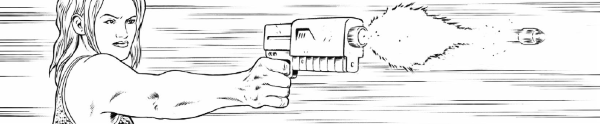

A cleverly-framed anthology series that's like Terror Tales from Mega-City One.
Art by Brian Corcoran
| Story Title | Parts | Pages | w indicates a wraparound coverCovers | Year(s) | Issues | Writer | Artist | Colourist | Letterer |
|---|---|---|---|---|---|---|---|---|---|
| The Wages of Crime | 1 | 12 | 0 | 2006 | M244 | John Wagner | Shaun Thomas | [greyscale] | Ellie de Ville |
| Headshots | 1 | 6 | 0 | 2006 | M245 | Dan Abnett | John Ridgway | [b&w] | Annie Parkhouse |
| Ruddler's Cuddlers | 1 | 6 | 0 | 2006 | M246 | Simon Spurrier | Graham Manley | [greyscale] | Annie Parkhouse |
| Burn! | 1 | 6 | 0 | 2006 | M247 | John Smith | Adrian Salmon | [greyscale] | Annie Parkhouse |
| Message Inside Reads | 1 | 6 | 0 | 2006 | M248 | Dan Abnett | Len O'Grady | [greyscale] | Annie Parkhouse |
| Tastes Like Chicken | 1 | 6 | 0 | 2006 | M249 | Jonathan Clements | Dom Reardon | [b&w] | Annie Parkhouse |
| Feeders and Eaters | 1 | 6 | 0 | 2006 | M250 | John Smith | Vince Locke | [b&w] | Annie Parkhouse |
| God of Gamblers | 1 | 6 | 0 | 2006 | M251 | Al Ewing | Rufus Dayglo | [spot color] | Annie Parkhouse |
| Shades of Grue | 1 | 6 | 0 | 2006 | M252 | Al Ewing | Dean Ormston | [greyscale] | Annie Parkhouse |
| Apres Moy, la Deluce | 1 | 6 | 0 | 2007 | M256 | Alan Grant | Dylan Teague | [b&w] | Simon Bowland |
| Short Fuse | 1 | 6 | 0 | 2007 | M265 | Al Ewing | Robin Smith | <-- | Ellie de Ville |
| Build a Better Mousetrap | 1 | 9 | 0 | 2008 | M275 | Al Ewing | Jackademus | [greyscale] | Ellie de Ville |
| The Incredible Teatime Torture Show | 1 | 9 | 0 | 2009 | M284 | Tony Lee | Vince Locke | Fiona Staples | Simon Bowland |
| Who Do the Voodoo That You Do? | 1 | 9 | 0 | 2009 | M285 | Tony Lee | Jon Davis-Hunt | <-- | Simon Bowland |
| Rat Runs | 1 | 9 | 0 | 2009 | M286 | Arthur Wyatt | Nick Dyer | Gary Caldwell | Simon Bowland |
| The Shadow Over James Block | 1 | 9 | 0 | 2009 | M289 | Arthur Wyatt | Tiernen Trevallion | [greyscale] | Simon Bowland |
| Heart of Iron | 1 | 9 | 0 | 2009 | M291 | Arthur Wyatt | Paul J Holden | [spot color] | Ellie de Ville |
| Dead Man's Gum | 1 | 9 | 0 | 2010 | M298 | Michael Carroll | Smudge | Eva de la Cruz | Simon Bowland |
| Purgation | 1 | 9 | 0 | 2010 | M299 | Arthur Wyatt | Jon Davis-Hunt | <-- | Simon Bowland |
| A Judge's First Duty | 1 | 9 | 0 | 2010 | M302 | Michael Carroll | Tiernen Trevallion | [b&w] | Ellie de Ville |
| The Invisible Bullet | 1 | 9 | 0 | 2010 | M304 | Michael Carroll | Nick Dyer | [b&w] | Ellie de Ville |
| Slay It With Flowers | 1 | 9 | 0 | 2011 | M315 | Alec Worley | Graeme Neil Reid | [b&w] | Ellie de Ville |
| The Unfortunate Case of High-Altitude Albert | 1 | 9 | 0 | 2011 | M317 | David Baillie | Joel Carpenter | [b&w] | Simon Bowland |
| Scouting for Bots | 1 | 9 | 0 | 2012 | M322 | Leah Moore John Reppionvarious | D'Israeli | [b&w] | Simon Bowland |
| The Girl With the Gila Munja Tattoo | 1 | 9 | 0 | 2012 | M327 | Alec Worley | David Roach | [b&w] | Simon Bowland |
| Mom vs. Food | 1 | 9 | 0 | 2013 | M339 | Alec Worley | Joel Carpenter | [b&w] | Simon Bowland |
| …And Death Must Die! | 1 | 9 | 0 | 2014 | Reprints: M423 (supplement)M348 | David Baillie | Jake Lynch | [b&w] | Ellie de Ville |
Linked to The Mean MachineRising Angel | 1 | 10 | Nick Percival 1 | 2015 | M358 | Michael Carroll | Nick Percival | <-- | Ellie de Ville |
| Chester's Web | 1 | 9 | 0 | 2015 | M360 | Alec Worley | Paul Davidson | [b&w] | Annie Parkhouse |
| Cult Status | 1 | 9 | 0 | 2017 | M381 | Rory McConville | Staz Johnson | [b&w] | Simon Bowland |
| Bite Sized | 1 | 9 | 0 | 2017 | M385 | Rory McConville | Andrew Currie | [b&w] | Annie Parkhouse |
| Fake News | 1 | 9 | 0 | 2017 | M391 | Rory McConville | Neil Googe | [greyscale] | Simon Bowland |
| Prophet of Stomm | 1 | 9 | 0 | 2018 | M397 | David Baillie | Steven Austin | [b&w] | Annie Parkhouse |
| Just Business | 1 | 9 | 0 | 2019 | M408 | Rory McConville | Neil Googe | [greyscale] | Annie Parkhouse |
| Tainted Love | 1 | 9 | 0 | 2019 | M413 | Rory McConville | Joe Palmer | [b&w] | Ellie de Ville |
| Big Marilyn | 1 | 9 | 0 | 2019 | M414 | Laura Bailey | Brian Corcoran | [b&w] | Ellie de Ville |
| The Cackle | 1 | 10 | 0 | 2020 | M422 | Alec Worley | Leigh Gallagher | [b&w] | Simon Bowland |
| The Obsidian Ingress | 1 | 10 | 0 | 2020 | M423 | David Baillie | Anna Morozova | [greyscale] | Simon Bowland |
| year | episodes | pages |
| 2001 | 0 | 0 |
| 2002 | 0 | 0 |
| 2003 | 0 | 0 |
| 2004 | 0 | 0 |
| 2005 | 0 | 0 |
| 2006 | 9 | 60 |
| 2007 | 2 | 12 |
| 2008 | 1 | 9 |
| 2009 | 5 | 45 |
| 2010 | 4 | 36 |
| 2011 | 2 | 18 |
| 2012 | 2 | 18 |
| 2013 | 1 | 9 |
| 2014 | 1 | 9 |
| 2015 | 2 | 19 |
| 2016 | 0 | 0 |
| 2017 | 3 | 27 |
| 2018 | 1 | 9 |
| 2019 | 3 | 27 |
| 2020 | 2 | 20 |
| 2021 | 0 | 0 |